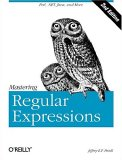

Buy Mastering Regular Expressions from Amazon.com
Buy Mastering Regular Expressions from Amazon.co.uk
When first published in 1997, "Mastering Regular Expressions" was the only book with solid information on modern regular expressions, particularly as implemented in Perl 5. It quickly became a must-read book for anyone who wanted to learn more about regular expressions.
While the first edition had a heavy emphasis on Perl, the second edition of "Mastering Regular Expressions" (2002) equally covers Java and .NET.
The first six chapters of the book (283 pages) deal with regular expressions in general. Don't expect an easy-going tutorial here. While you could read "Mastering Regular Expressions" without prior knowledge on the subject, the book is really intended for people who already know the basics, and are ready to get the most out of regular expressions. You'll get more out of the book if you read through the regular expression tutorial on this web site first to get some experience.
The book doesn't focus on teaching you how to use regular expressions at all, but how to use them efficiently. Expect lots of detailed information on how the regular expression engine works on the inside, and how to take advantage of this knowledge.
The final three chapters in this book each cover one of the three regex flavors that are probably the most widely used ones today. Chapter 7 covers Perl and its many regex-related features and tricks. Regular expressions are a core part of the Perl language, forming an essential part of almost any Perl script. Here you'll learn everything that no other book on Perl (that I know) will teach you. Where general books on programming in Perl usually have one chapter with a regular expression quick start, "Mastering Regular Expressions" shows you how to best use them with Perl.
The Java chapter consists of two parts. In the first part, the author compares various regular expression packages for Java. Since Java did not have any regular expression support built-in until version 1.4.0 of the JDK, there are many 3rd party packages available. If you're writing a Java app that needs to run on a Java VM prior to 1.4.0, the comparison certainly contains useful information. The last 20 pages of chapter 8 contain an introduction to the java.util.regex package that is part of the JDK 1.4.0 and later. If you're planning on using this package, you'll probably want to get a copy of "Java Regular Expressions" by Mehran Habibi to go along with "Mastering Regular Expressions".
The final chapter provides a good overview of the regular expression support in Microsoft's .NET framework, and how to best use it. This chapter provides a lot of information that is sorely lacking from the documentation included with the .NET SDK. While I wouldn't recommend buying this book just for the .NET chapter, "Mastering Regular Expressions" is certainly a good buy for .NET programmers wanting to get the most of their programming framework's excellent regular expression support.
Buy Mastering Regular Expressions from Amazon.com
Buy Mastering Regular Expressions from Amazon.co.uk
Page URL: http://www.Regular-Expressions.info/hipowls.html
Last Updated: 28 September 2005
Copyright © 2003-2005 Jan Goyvaerts. All rights reserved.
| Books |
| Teach Yourself Regexp |
| Mastering Regular Expr. |
| Java Regular Expressions |
| Regular Expr. Recipes |
| Regex Recipes for Windows |
| Regex Reference |
| Basic Regex Syntax |
| Advanced Regex Syntax |
| Unicode-Specific Syntax |
| Flavor-Specific Syntax |
| More Information |
| Introduction |
| Quick Start |
| Tutorial |
| Tools and Languages |
| Examples |
| Books |
| Reference |
| About This Site |
| Download and Print |